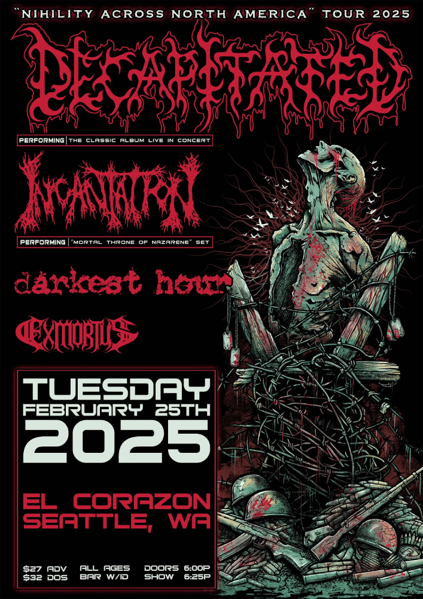
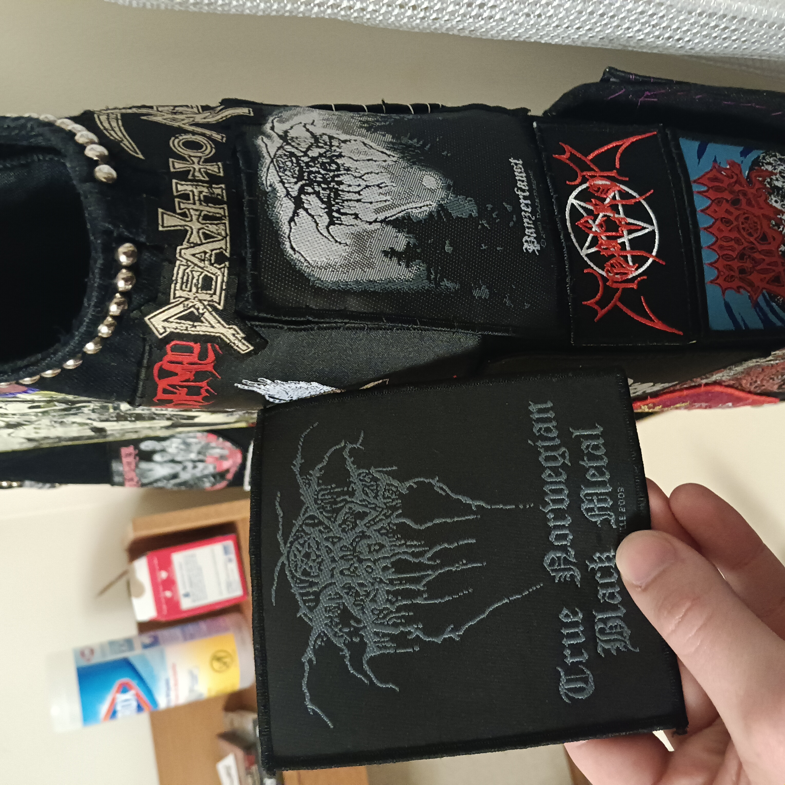
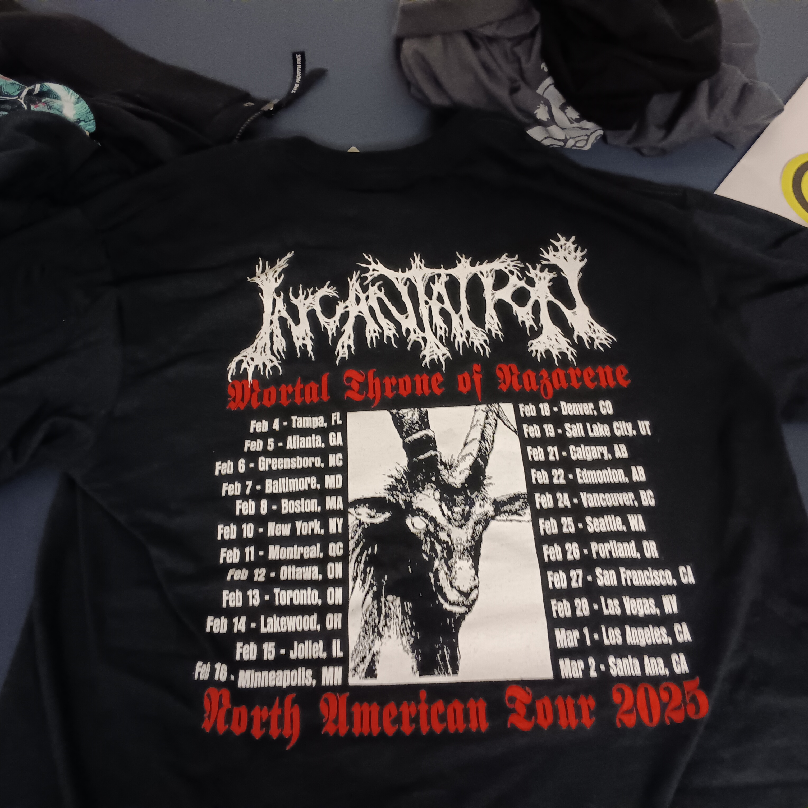
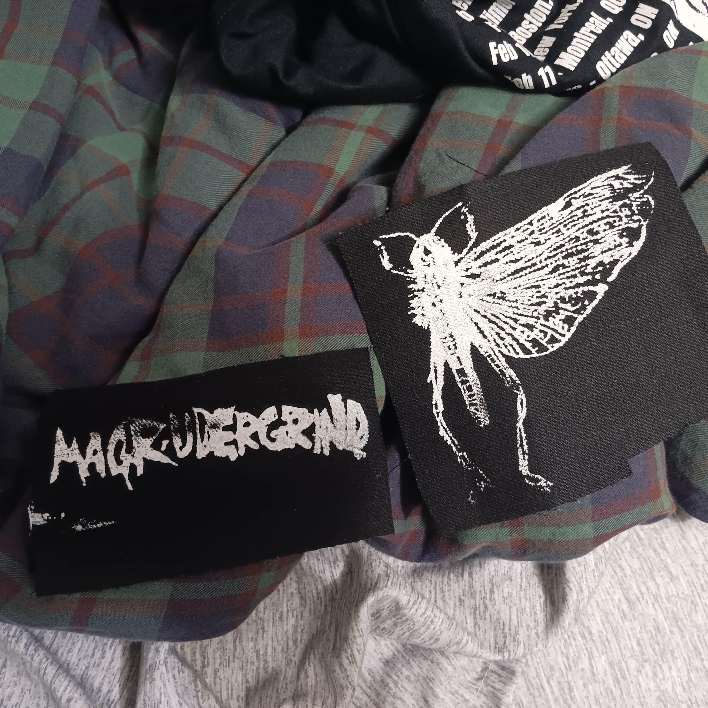
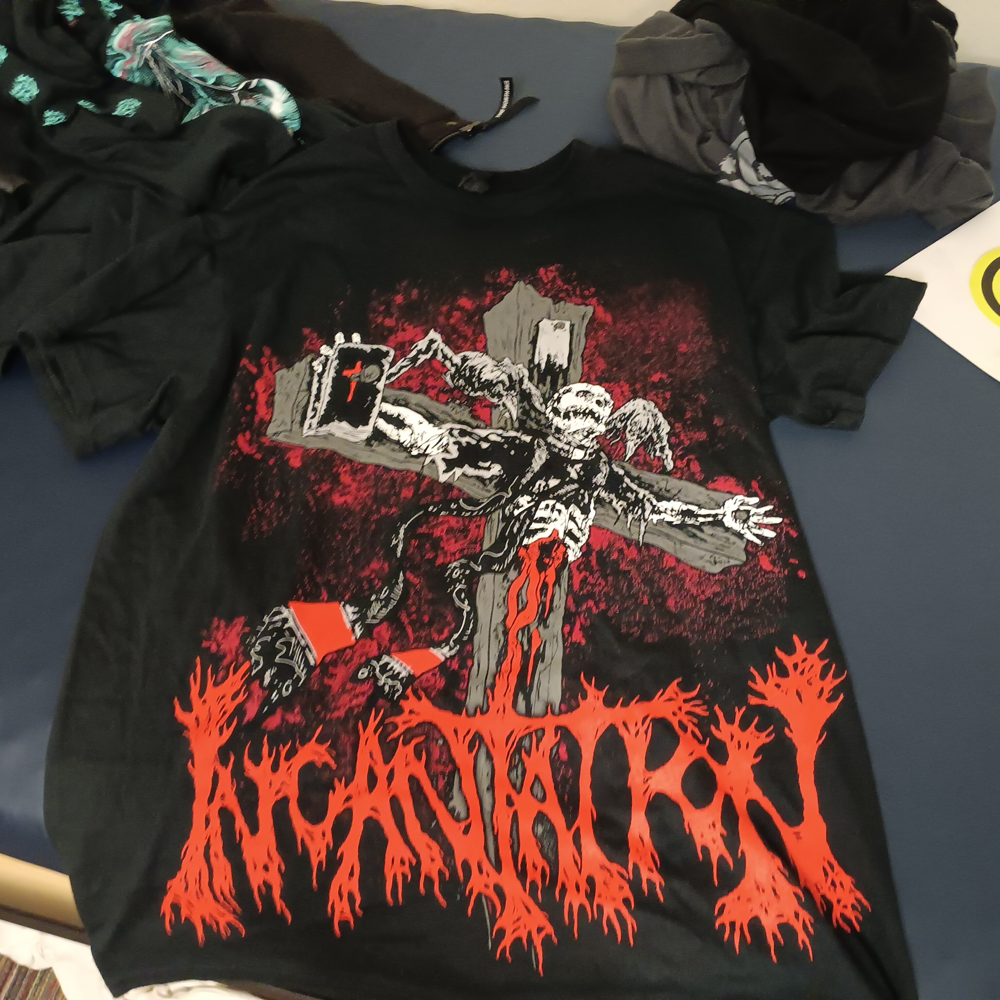
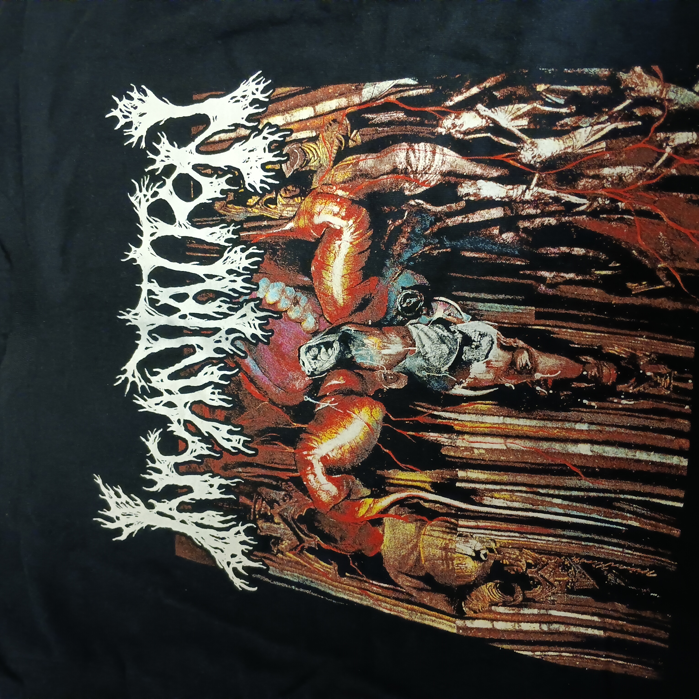
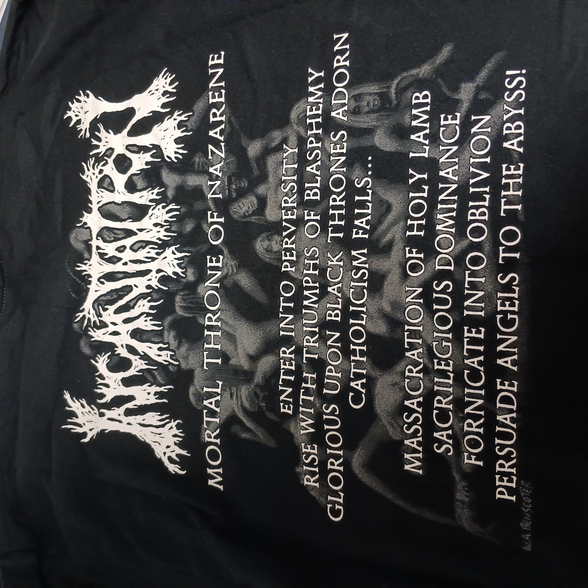
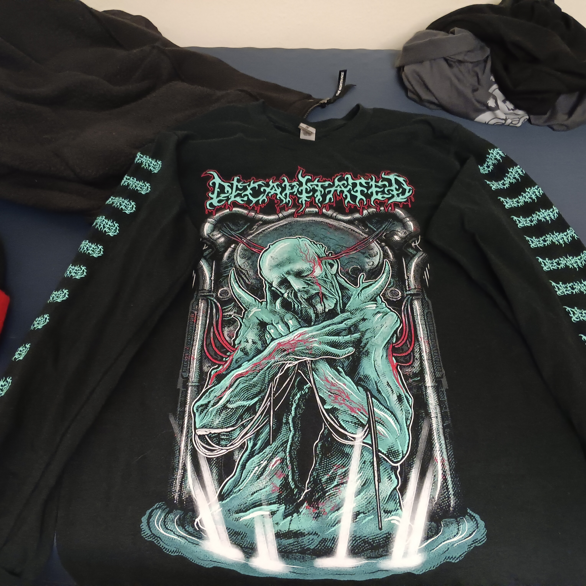
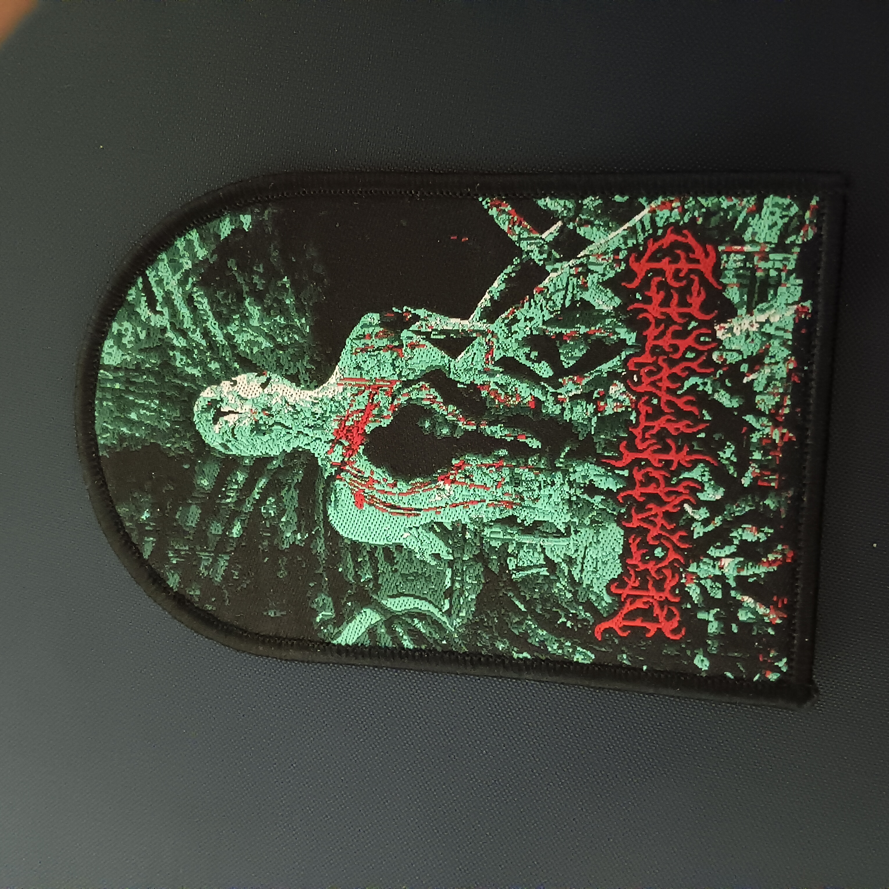

February 25th, 2025

The Decapitated / Incantation show was another one that I planned on seeing with Lucas. We both decided to go a few months in advance, hence why I was listening to the Decapitated debut while working on my car in December. I actually misinterpreted the tour poster. It said Decapitated was playing "the classic album" (it was also called the "Nihility Across North America Tour," but that went over my head for some reason) so I assumed they must have meant the debut. Nevermind the fact that the artwork was very clearly based off of the artwork of their second album, "Nihility." It was a damn good album, though, I must say. When I eventually realized my error, I actually still preferred the debut over "Nihility" for a while. Not sure if that's true now, though. I need to revisit the debut sometime. But Nihility definitely grew on me. I also spent plenty of time listening to Mortal Throne of Nazarene, which also took some time to grow on me, as many albums do.
But by the time the show rolled around, I was a big fan. I think I must have had my Philosophy 112 midterm the next day, because I was studying for it while standing in line at El Corazon. We had to write an essay during the 50 minute class period, and the prompt was based off a book we had been reading, "Wellbeing by Ben Bradley." The good news was that we could bring in notes. So I spent a couple of days before the exam thinking up a response to the prompt. I wasted a lot of time trying to think of something original, because there were already many points to make that were obvious and thoroughly-discussed in class. But there really wasn't anything I could come up with that was both original and held up under scrutiny. So I folded and picked the response that I was probably "supposed" to, and I got my argument together and had the structure and all of the examples lined up on paper. While I was standing in line, I was holding a small yellow notepad up against the stone wall and writing down my response to one aspect of the prompt. I don't think I spent very long studying like that, but I think I got an A on the exam, so you won't hear any complaints for me.

I expected to meet up with Lucas earlier, but I don't think he arrived until a while after I had already gone inside. I was disappointed to find that both Incantation and Decapitated were sold out of patches. I didn't look at any of the openers' merch since I hadn't gotten the chance to check them out before the show. Lucas and I had started something of a tradition by now where we exchange patches whenever we see each other. It kind of just became an unspoken thing. I gave him a Gummo patch (Gummo is one of his favorite movies) that I got for free from Noclassmerch when I bought a Sacrilege patch from them, and he gave me a couple patches he made himself and a Darkthrone patch--although I already had a Darkthrone patch on my vest. When I was going to SU, I showed him A Blaze in the Northern Sky, so I think he associates me with Darkthrone even though they're far from my favorite band (but I've come to really like them over time, more than I did back then). So the patch is valuable in that way, too. The patches he made for me were a patch of The Locust and a Magrudergrind logo patch. I bought him a Magrudergrind album on vinyl right before I left SU. As for The Locust, I hadn't heard them before, and he said he thought I liked them, but I didn't mind. I should probably check them out at some point. I ended up putting the Magrudergrind patch on my vest. I felt kind of bad not putting the last patch he gave me on my vest, but it wasn't a band patch and I just didn't really have room. In this case, I don't listen to Magrudergrind that much, but their S/T is still a cracking album and it was a pretty small patch, and my friend made it for me, so I decided to put it on. Last thing about patches: I had anticipated the patches being sold out, so I bought a Decapitated patch in advance. So I was only a little disappointed when they were sold out. As for the Incantation patches though, the pickings online are slim, especially if you want a patch of anything other than "Onward to Golgotha." That night I saw them playing "Mortal Throne of Nazarene," and it's still my favorite Incantation album, so I'm waiting for someone to make a patch of that one. I've got a spot on my vest saved for it.

Now for the actual show. I'm writing this just over three months after the fact, so my memory of the show itself isn't incredible, but I'll do my best. I don't remember much about the opener, Exmortus, but I think they were solid. Darkest Hour was interesting. I kind of expected them to be a shitty metalcore/deathcore band or something, but only one of those things was true; they were actually pretty good. There were a few songs I liked. I almost went over and bought a patch from them after the show, but I ended up deciding against it. I don't think I liked them enough to put them on my vest, and I didn't really feel like waiting in line at the merch booth. Incantation was great, as expected. They played a cool horror movie sample right before they all walked on stage, and I just watched "The Evil Dead" a few weeks ago and in retrospect I'm fairly sure the sample was from that movie. I might be wrong though. Anyways, they played "Mortal Throne of Nazarene" in all of its entirety and it was a lot of fun. I remember headbanging particularly hard for "Abolishment of Immaculate Serenity." I can't remember at which point during the show this took place, but Lucas ended up getting an Incantation shirt (makes sense, cause Incantation is one of his favorite bands). He got the shirt with all the tour dates in the back, but he wanted an XL or something like that, and they were sold out, but the guy at the merch booth said they just got restocked and that it would be available in a few minutes, so we waited around for that. I ended up caving and get a tour shirt for myself. I already bought a shirt of the album cover, since I thought the art was way better, but I still wanted a tour shirt and I thought the back looked really cool, so I bought it, even though I didn't really like the artwork on the front. Decapitated also put on a great show. It seems likely to me that their lineup had changed quite a bit since 2002 or whatever, since one of the guitarists seemed a bit older than everyone else, and the vocalist had a different style than what I was used to from the first two Decapitated albums. It was less of a low growl and more like shouting. I preferred the style actually present on those albums, but I don't think the new style took away from the music all too much. I remember when "Spheres of Madness" came on, this girl in front of me went wild. So did I.





